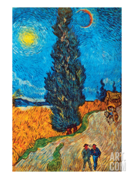
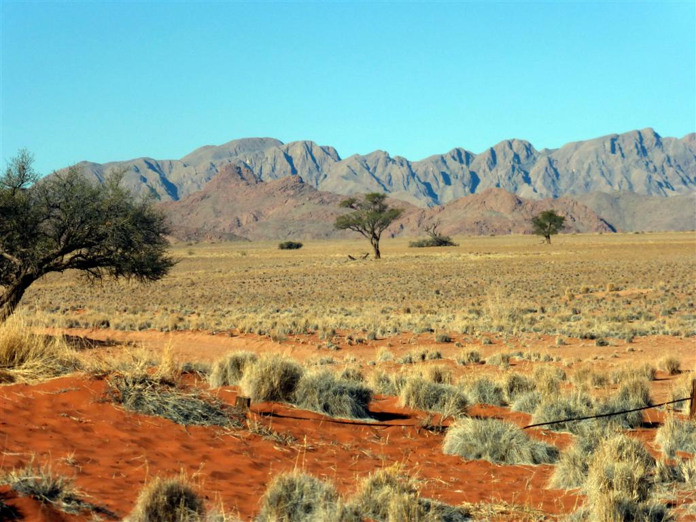

Vremea curentă Răstolţu Deşert, Sălaj, România | AccuWeather

Răstolţu Deşert, Sălaj
20° C Utilizaţi locaţia dvs. curentă Locaţii recente 20° C Căutaţi locaţia setări Vreme Răstolţu Deşert, Sălaj Acum Radar Calitatea aerului MinuteCast Pe ore Zilnic LunarPe glob
Radar şi hărţi
Uragan
Condiţii meteorologice severe
Video
Noutăţi
Acum Radar Calitatea aerului MinuteCast Pe ore Zilnic Lună joi, 24 septembrieVremea curentă
11:18
20° C RealFeel® 23° RealFeel® 23° RealFeel Shade™ 20° Noros RealFeel Shade™ 20° Index UV maxim 2 Scăzut Vânt 0 km/h Rafale de vânt 0 km/h Umiditate 63% Punct de rouă 13° C Presiune 1012 mbar Nori 91% Vizibilitate 16 km Plafon 8800 mZi
25° Mx RealFeel® 28° RealFeel Shade™ 25° 24.09 O furtună în unele zoneIndex UV maxim 4 Moderat
Vânt S 6 km/h
Rafale de vânt 13 km/h
Probabilitate de precipitaţii 52%
Probabilitate de furtuni cu descărcări electrice 60%
Precipitaţii 3.4 mm
Ploaie 3.4 mm
Ore de precipitaţii 1.5
Ore de ploaie 1.5
Nori 59%
Dimineaţa
După-amiaza
Noapte
12° Mn RealFeel® 11° 24.09 Parţial norosVânt S 7 km/h
Rafale de vânt 13 km/h
Probabilitate de precipitaţii 25%
Probabilitate de furtuni cu descărcări electrice 5%
Precipitaţii 0.0 mm
Nori 40%
Seara
Noaptea
Soarele răsare/apune
12 ore
02 min.
Răsărit 07:18 Apus 19:208 ore
22 min.
Răsărit 15:44 Apus 00:06Istoric temperaturi
24.09 Ridicat Scăzut Prognoză 25° 12° Medie 20° 8° An ant. 22° 13°Mai în viitor
Pe ore
Zilnic
Lună
Pe glob
Radar şi hărţi
Uragan
Condiţii meteorologice severe
Video
Noutăţi
Lume Europa România Sălaj Răstolţu DeşertLocaţii în apropiere:
Agrij , Sălaj ; Bercea , Sălaj ; Bodia , Sălaj © 2020 AccuWeather, Inc. AccuWeather şi Sun Design sunt mărci comerciale înregistrate ale AccuWeather, Inc. Toate drepturile rezervate. Termeni de utilizare | Politica privind confidenţialitatea datelor | Politica privind modulele cookie | Declaraţie TAGAm actualizat Politica privind confidenţialitatea datelor şi Politica privind modulele cookie .
Am înţelesGet AccuWeather alerts as they happen with our browser notifications.
Enable Notifications No, ThanksNotifications Enabled
Thanks! We’ll keep you informed.
